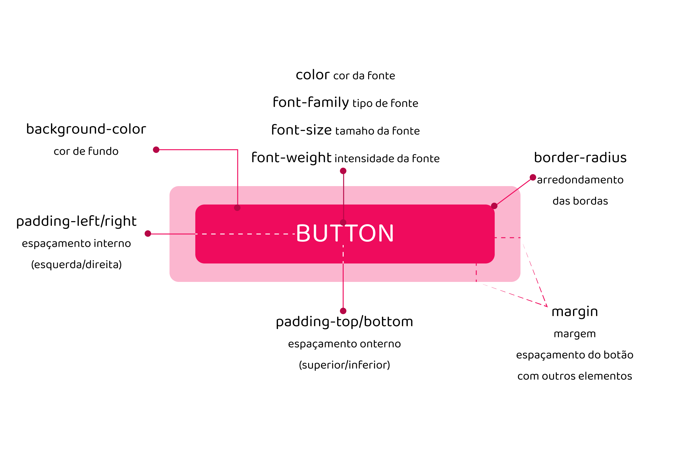
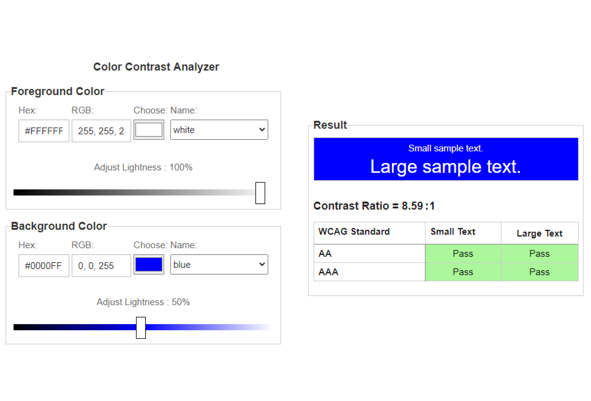
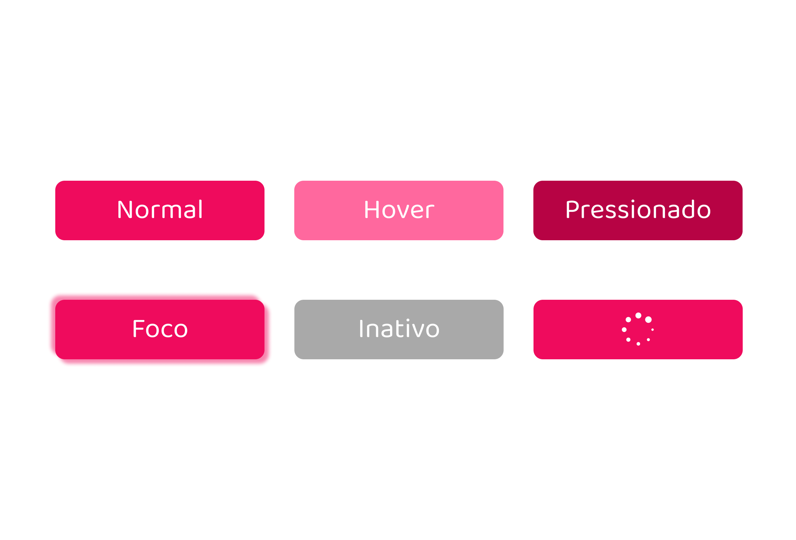
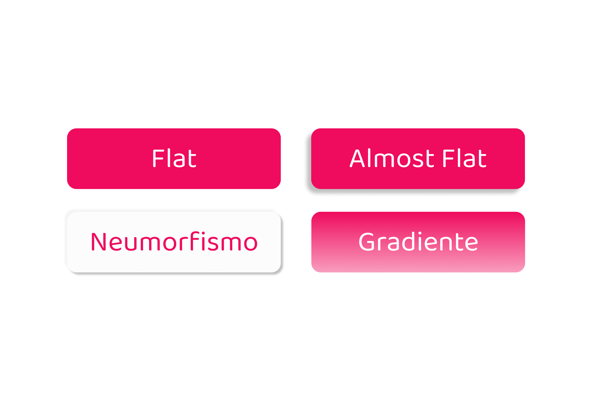

O Universo dos Botões - Parte 2
Anatomia, Estados e Estilos
Do que consiste um botão?

Parece ser muita coisa mas no geral não é.
Porem, esse tipo de botão é o mais simples. Ainda temos botões com ícones, botões com outros tipos de bordas, tamanhos, etc...
~Em relação a cor, preste atenção ao contraste, pois o mesmo tem a ver com acessibilidade. Use o site de Contraste em caso de dúvidas

São várias características, mas todas determinadas por você.
Então fique de olho nas cores usadas no site, na tipografia, e o tipo de Botão que você precisa. ~O conteúdo sobre botões está na Parte 1.
Sobre os Estados, temos:

- Normal: É o estado padrão do botão.
- Hover: É o estado quando o cursor do mouse está sobre o botão ( Nele você pode aplicar várias outras características, geralmente se altera a cor ).
- Pressionado: Ao clicar no botão e manter pressionado, também podemos fazer uma alteração, como cor, contraste, etc...
- Foco: Geralmente utilizado em formulários, ele fica com uma luz clara ao redor.
- Inativo: São indicados com a cor cinza ( independente do tom ) e sua ação está inativa! rs.
- Progresso: Indica que uma ação ainda está acontecendo. Mas não é muito utilizado. Geralmente acontece na interface inteira, mostrando o Loading.
Estilos:

- Flat: É um botão totalmente plano, consiste de uma única cor e não possui nenhum tipo de efeito.
- Almost Flat: O botão "quase plano". Surgiu pois alguns usuários tinham divergências em relação ao Flat. Nele, possui leves sombras para melhor identifica-ló como botão.
- Neumorfismo: Ele é da mesma cor que seu background, mas contem 2 tipos de sombras negativas e 2 positivas, dando a impressão de estar flutuando.
~Para ser mais efetivo, você pode alterar um pouco o contraste da cor do botão ou background.
- Gradientes: Um 'tcham' a mais no botão. Dessa vez utilizando gradientes horizontais ou verticais.
Dúvidas? Sugestões? Quer bater um papo?
Entre em contato, ficarei muito feliz em receber uma mensagem!
{kind=link}
{kind=link}
{kind=link}
{kind=link}